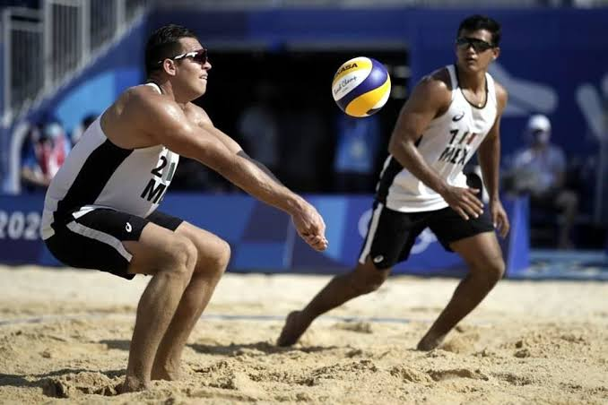
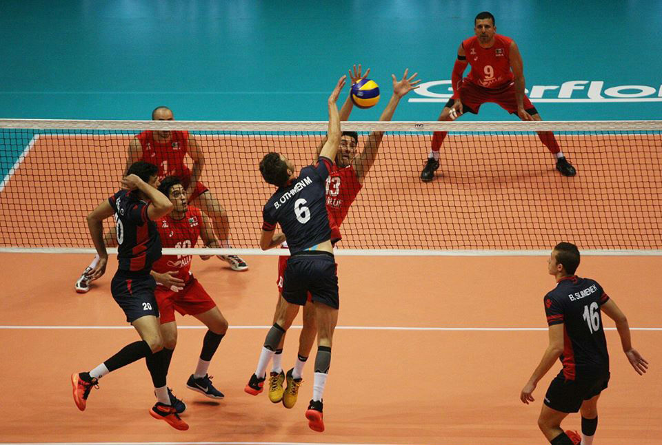
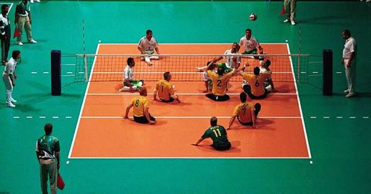

1. Vóley Playa: Esta variante se juega al aire libre sobre una superficie de arena fina, profunda y nivelada, en una cancha ligeramente más pequeña que la de sala (16x8 metros) y expuesta a factores climáticos como el viento y el sol. A diferencia de la modalidad de sala, se compite en equipos de solo 2 jugadores sin posibilidad de cambios ni sustituciones, lo que exige que ambos atletas dominen absolutamente todas las facetas del juego (saque, recepción, colocación, ataque y defensa). Los partidos son más cortos, ganando el primero que consiga 2 de 3 sets (los dos primeros a 21 puntos y el tercero a 15). Físicamente es sumamente exigente debido a la dificultad de desplazarse y saltar sobre la arena suelta, y tácticamente resalta por el uso de señas con las manos detrás de la espalda para planificar la estrategia de bloqueo y defensa antes de cada saque.

2. Voleibol de Sala: Es la modalidad clásica y originaria de este deporte, jugada en un pabellón cerrado sobre una superficie rígida y lisa (madera o material sintético). Se disputa entre dos equipos de 6 jugadores en cancha (más los sustitutos) en un terreno de 18x9 metros dividido por una red cuya altura varía según la categoría (2.43 m para hombres y 2.24 m para mujeres). El objetivo es alcanzar la victoria ganando 3 de 5 sets, donde los primeros cuatro sets se juegan a 25 puntos y el quinto (si es necesario) a 15 puntos. Esta variante destaca por su alto nivel de especialización táctica y de posiciones, una velocidad de balón extrema, combinaciones de ataque complejas y un juego aéreo espectacular con bloqueos colectivos y potentes remates.

3. Voleibol Sentado: Es la modalidad adaptada para atletas con discapacidad física (como amputaciones, lesiones de ligamentos o problemas motores) y forma parte oficial del programa de los Juegos Paralímpicos. Se juega en una cancha techada más reducida (10x6 metros) y con una red mucho más baja (1.15 m para hombres y 1.05 m para mujeres), enfrentando a dos equipos de 6 jugadores. La regla fundamental y más sagrada de esta variante es que los jugadores deben mantener la pelvis o el torso en contacto con el suelo en todo momento al tocar el balón, especialmente al atacar o bloquear. A diferencia del voleibol convencional, en el voleibol sentado está permitido bloquear el saque del equipo contrario, lo que genera una dinámica de juego extremadamente rápida, rítmica y con intensos intercambios de reflejos a corta distancia.
